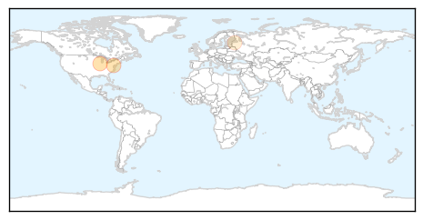

West Nile Virus
30-Day Web Trend
0 alerts, 0 warnings
30-Day Twitter Trend
1 alerts, 0 warnings

Article Locations
Article Confidences

Top Articles:
Top Tweets:
- 0.686
- Flavivirus news: Miss health officials: 4 new human cases of West Nile virus - The Idaho States... http://t.co/VdCsnt07ma pathogenposse
Unknown
30-Day Web Trend
0 alerts, 0 warnings

30-Day Twitter Trend
0 alerts, 0 warnings

Article Locations

Article Confidences

Top Articles:
- 0.995
- More deaths reported in New York Legionnaires' outbreak
- 0.989
- Meningococcal alert: child in hospital
- 0.987
- Rockland Officials Watching Local Legionnaires' Disease...
- 0.985
- Mayor De Blasio Says NYC Has Successfully Contained Legionnaires' Disease Outbreak
- 0.979
- 8th person dies in New York Legionnaires’ disease outbreak
- 0.979
- Health officials hope the worst case of Legionnaires' outbreak in NYC is over
- 0.977
- LEGIONNAIRE’S SCARE NYC outbreak grows to 10 dead, 100 diagnosed
- 0.940
- Russian doll disease is a virus inside a parasite inside a fly
- 0.936
- 3 Rocklanders affected by Legionnaires'; Chromalloy reopens
- 0.917
- Chicago Tribune
- 0.917
- Chicago Tribune
- 0.917
- Chicago Tribune
- 0.917
- Chicago Tribune
- 0.913
- New York governor taking action after deadly illness
- 0.882
- Intestinal parasite outbreak linked to imported produce
- 0.873
- Malawi urged not to panic over outbreak of maize disease
- 0.864
- Legionnaires’ disease outbreak appears to be slowing down, NYC health officials say
- 0.857
- CDC warns of rabies surge in Bali, Indonesia
- 0.849
- Rapid Response on Ohio's Church Potluck Botulism Outbreak
- 0.842
- Legionella Disease outbreak cases found around 100 people
- 0.838
- Death Toll Rises To 12 In South Bronx « CBS New York
- 0.833
- Deaths due to Legionnaires Disease Results in Widespread Order to Inspect Cooling Towers
- 0.818
- Ten dead in record New York Legionnaires’ outbreak
- 0.816
- NYC Legionnaires' outbreak: Cooling towers explained
- 0.811
- Newport Hospital Leads State in Opening First Lyme Disease Center
- 0.798
- Cyclospora Outbreak Announced in Canada Too
- 0.798
- California child diagnosed with plague after trip to Yosemite
- 0.780
- NYC Mayor Wants New Laws To Stem Legionnaires’ As Death Toll Hits 12
- 0.775
- California child diagnosed with plague after trip to Yosemite
- 0.765
- California public health department investigates plague case
- 0.748
- Zambia National Broadcasting Corporation
- 0.722
- Ministry of Health signals shift in spending priorities
- 0.715
- 79 new diarrhoea patients admitted to Kolkata hospital
- 0.711
- Rocky Mountain spotted fever rare in Indiana
- 0.709
- Medical Crowdsourcing Saves Child’s Life from Deadly E. Coli Infection
- 0.677
- Turkish security forces reel from wave of attacks
- 0.675
- Health ministry enacts special fund for patients
- 0.675
- Four More Public Health Departments Awarded National Accreditation by the Public Health Accreditation Board
- 0.666
- blame consumers
- 0.661
- Legionnaires' Disease Outbreak in South Bronx Leaves 7 dead, says Legal-Bay Lawsuit Settlement Funding
- 0.635
- Sonora / Tuolumne News, Sports, & Weather, Angels Camp, Twain Harte, Jamestown
- 0.615
- Study Claims Hand Washing Practices Low Among Healthcare Staff In India
- 0.605
- Child Camping in Sierras Contracts Plague
- 0.604
- EU approves €2.4 billion to tackle migrant crisis
- 0.604
- Woman drowns in Dubai after father blocks rescue to save her from ‘dishonour’
- 0.593
- Science Media Centre Blog Archive New Zealanders uncertain about water fluoridation
- 0.582
- Taipei Water Department makes compensation vow
- 0.581
- 19th annual rabies bait drop begins Aug. 11
- 0.575
- Myanmar: UNICEF calls for $9.2 million USD for children affected by Myanmar floods, as supplies arrive
- 0.562
- Global Medical Crowdsourcing Helped Save Girl From Deadly E. Coli Strain That Killed Brother
Showing top 50 articles...
Top Tweets:
- 0.670
- Riyadh has a MERS outbreak. Saudis report +4 cases today. That makes 19 in the past 8 days. Most today don't have links to known cases. 1/2
- 0.552
- RT: NEWS SCAN: Cyclospora in Canada, global flu update, flu vaccine and race http://t.co/rH0nftt3Ja